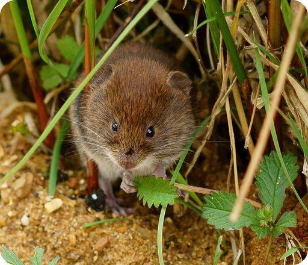
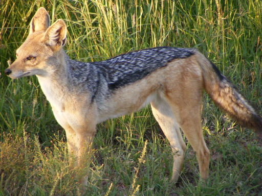
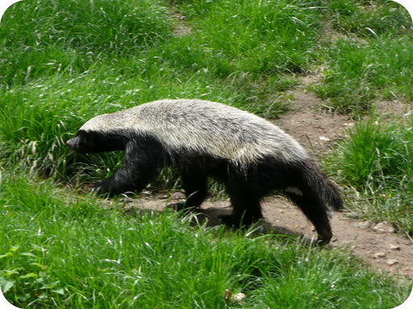

| Type of Diet | Foods Eaten | Examples of Mammals with this Type of Diet |
|---|---|---|
| herbivorous diet: plants | leaves, grasses, shoots, stems, roots, tubers, seeds, nuts, fruits, bark, conifer needles, flowers |
rabbit, mouse, sea cow, horse, goat, elephant, zebra, giraffe, deer, elk, hippopotamus, kangaroo, monkey  |
| carnivorous diet: animals | other mammals, birds, reptiles, amphibians, fish, mollusks, worms, insects |
aardvark, anteater, whale, hyena, dog, jackal, dolphin, wolf, weasel, seal, walrus, cat, otter, mole  |
| omnivorous diet: plants and animals | any of the foods eaten in herbivorous and carnivorous diets |
bear, badger, mongoose, fox, raccoon, human, rat, chimpanzee, pig  |